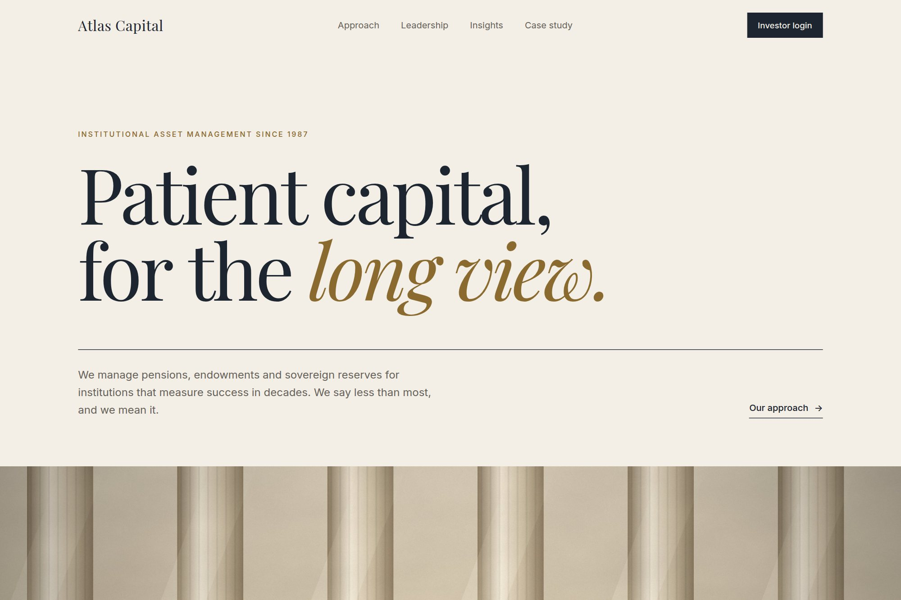

13 — Institutional finance
Designing institutional confidence.
An investor-facing experience carrying the weight of a large asset manager without decoration for decoration’s sake.

- Type
- Concept · self-directed
- Discipline
- Product · UI
- Deliverables
- Landing concept, editorial grid, UI kit
- Duration
- 8 weeks
01The brief
Institutional finance sites tend to bury conviction under boilerplate. The brief asked for the opposite: lead with a single confident statement, let numbers speak plainly, and give leadership a voice through media rather than stock photography.
The system also had to scale across What We Do, Strategies and Insights without losing its restraint.
02Design decisions
- An editorial type scale — display headlines against a quiet sans body — creating a broadsheet rhythm: authority without shouting.
- One number at a time: the AUM figure stands alone with its as-of date. No dashboards, no counters, a single audited fact.
- A leadership interview module anchors the page in place of stock photography, giving the firm a human voice.
03Outcome
A restrained editorial system that scales across the full site while staying unmistakably institutional, delivered in eight weeks as a landing concept, editorial grid and UI kit — now the visual reference for the wider build-out.
A concept project designed in-house by Yonder Tech, not a client engagement. Figures describe the delivered design system, not commercial results.